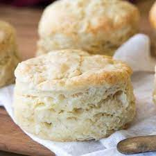

Homemade Biscuits

Source
Description
The best darn biscuits I've ever eaten. Please give them a try.
They are light, fluffy, and so buttery; not to mention they go with pretty much anything.
You wont regret making these.
Prep Time: 15 minutes
Cook Time: 12 minutes
Total Time: 27 minutes
Servngs: 6 biscuits
Calories: 280kcal
Author: Sam Merritt
Ingredients
- 2 cups all-purpose flour (250g)
- 1 Tablespoon baking powder
- 1 Tablespoon granulated sugar
- 1 teaspoon salt
- 6 Tablespoons unsalted butter very cold (85g), unsalted European butter is ideal, but not required
- ¾ cup whole milk¹ (177ml) buttermilk or 2% milk will also work
Steps
- For best results, chill your butter in the freezer for 10-20 minutes before beginning this recipe. It's ideal that the butter is very cold for light, flaky, buttery biscuits.
- Preheat oven to 425F and line a cookie sheet with nonstick parchment paper. Set aside.
- Combine flour, baking powder, sugar, and salt in a large bowl and mix well. Set aside.
- Remove your butter from the refrigerator and either cut it into your flour mixture using a pastry cutter or (preferred) use a box grater to shred the butter into small pieces and then add to the flour mixture and stir.
- Cut the butter or combine the grated butter until the mixture resembles coarse crumbs.
- Add milk, use a wooden spoon or spatula to stir until combined (don't over-work the dough).
- Transfer your biscuit dough to a well-floured surface and use your hands to gently work the dough together. If the dough is too sticky, add flour until it is manageable.
- Once the dough is cohesive, fold in half over itself and use your hands to gently flatten layers together. Rotate the dough 90 degrees and fold in half again, repeating this step 5-6 times but taking care to not overwork the dough.
- Use your hands (do not use a rolling pin) to flatten the dough to 1" thick and lightly dust a 2 ¾" round biscuit cutter with flour.
- Making close cuts, press the biscuit cutter straight down into the dough and drop the biscuit onto your prepared baking sheet.
- Repeat until you have gotten as many biscuits as possible and place less than ½" apart on baking sheet.
- Once you have gotten as many biscuits as possible out of the dough, gently re-work the dough to get out another biscuit or two until you have at least 6 biscuits.
- Bake on 425F for 12 minutes or until tops are beginning to just turn lightly golden brown.
- If desired, brush with melted salted butter immediately after removing from oven. Serve warm and enjoy.